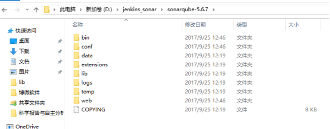
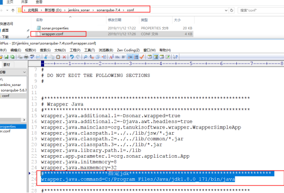
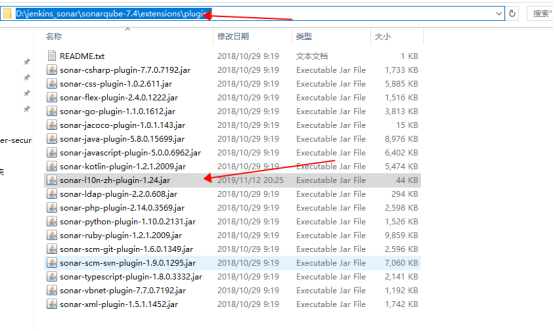
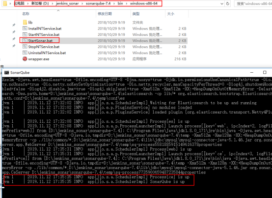
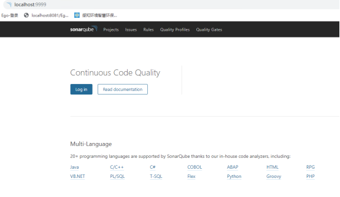
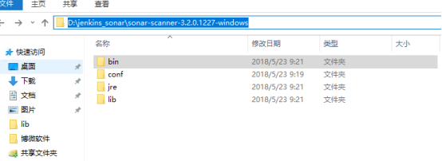
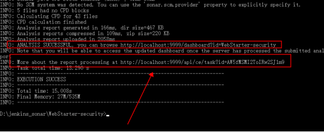
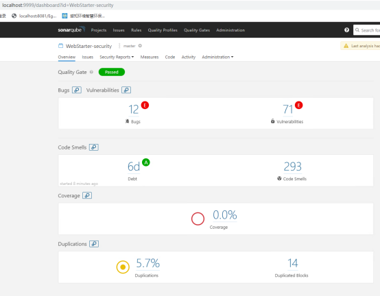
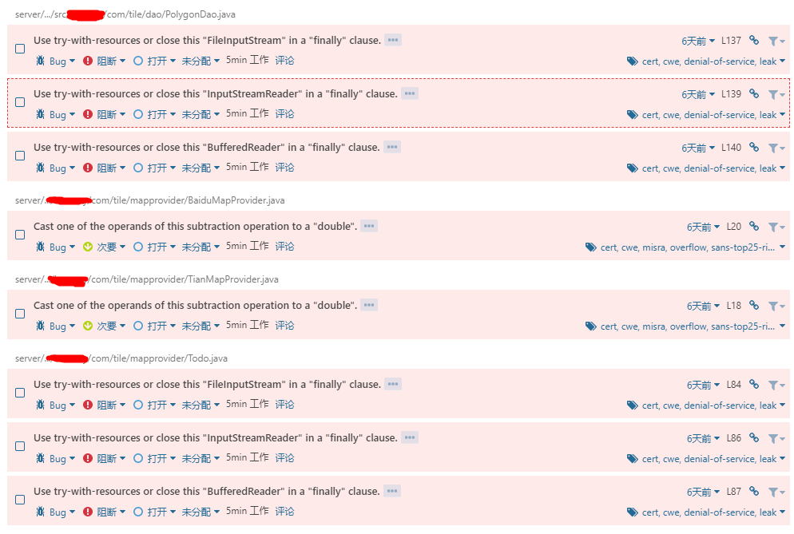

用jenkins+sonarqube去检查代码是非常方便的，它能检查出代码中可能存在的一些问题，比如io流未关闭、空指针异常、死循环、代码不规范等问题。
window系统+Jdk1.8+mysql5.6+python3.6
|
工具包 |
描述 |
下载地址（未精确到版本号） |
|
sonarqube-7.4.zip |
sonarqube核心包 |
|
|
sonar-scanner-2.8.zip |
代码扫描器 |
https://binaries.sonarsource.com/Distribution/sonar-scanner-cli/ |
|
jenkins-2.190.2.zip |
jenkins核心 |
SonarQube需要连接mysql，并且mysql需要开启innodb存储引擎，查询是否开启的sql语句是SHOW ENGINES。mysql5.6默认开启了innodb，那么直接在数据库中创建以下数据库，Sql如下：
|
创建用户sonar： CREATE DATABASE sonar CHARACTER SET utf8 COLLATE utf8_general_ci; CREATE USER 'sonar' IDENTIFIED BY 'sonar'; GRANT ALL ON sonar.* TO 'sonar'@'%' IDENTIFIED BY 'sonar'; GRANT ALL ON sonar.* TO 'sonar'@'localhost' IDENTIFIED BY 'sonar'; FLUSH PRIVILEGES; |
本项目解压到了D:\jenkins_sonar\sonarqube-7.4，目录结构如图2-1

图2-1
如图2-2所示，sonar.properties增加以下配置，主要是连接数据库的配置和tomcat端口。
|
sonar.jdbc.username=root sonar.jdbc.password=root sonar.jdbc.url=jdbc:mysql://localhost:3306/sonar?useUnicode=true&characterEncoding=utf8&rewriteBatchedStatements=true&useConfigs=maxPerformance sonar.web.port=9999 |
图2-2
因为SonarQube需要jdk1.8或者以上才能启动，如图2-3所示wrapper.conf指定jdk版本为1.8。

图2-3
下载汉化插件sonar-l10n-zh-plugin-1.24.jar放到以下目录，下载地址https://github.com/SonarQubeCommunity/sonar-l10n-zh/releases

打开图示windows批处理文件，如果命令行出现SonarQube is up则说
用本机浏览器输入localhost:9999能正常进入首页，则说明SonarQube配置成功。


如图3-1所示

图3-1
把解压后得到的bin目录加入到环境变量中，图示目录是D:\jenkins_sonar\sonar-scanner-3.2.0.1227-windows\bin。
在一个项目根目录下创建sonar-project.properties配置文件，并添加以下配置，以目录D:\jenkins_sonar\WebStarter-security为例。
|
#sonarqube服务器地址 sonar.host.url=http://localhost:9999 #sonarqube用户名默认就是admin sonar.login=admin #sonarqube密码 sonar.password=admin默认就是admin #项目唯一标识（不能出现重复） sonar.projectKey=WebStarter-security #项目名称 sonar.projectName=WebStarter-security #源代码目录 sonar.sources=./ #编译生成的class文件的所在目录 sonar.java.binaries=target #版本号 sonar.projectVersion=1.0 sonar.language=java #源代码文件编码 sonar.sourceEncoding=UTF-8
|
用cmd进入项目根目录D:\jenkins_sonar\WebStarter-security，执行sonar-scanner命令，出现以下提示则说明项目代码扫描成功。

浏览器进入http://localhost:9999/projects，右上角进行登录，默认管理员用户名和密码都是admin。
点击项目名进入对应的项目，出现以下扫描结果，就是成功扫描代码了。

代码检查出来的问题
